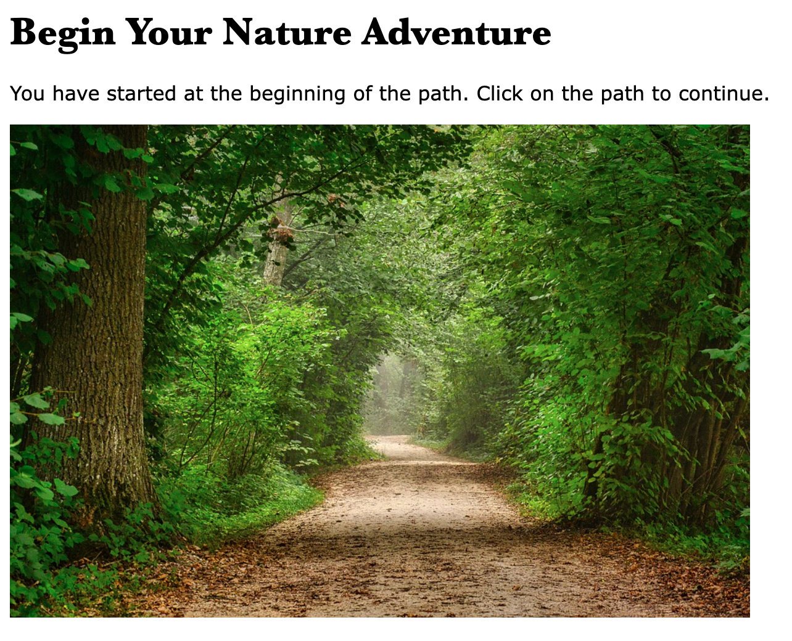
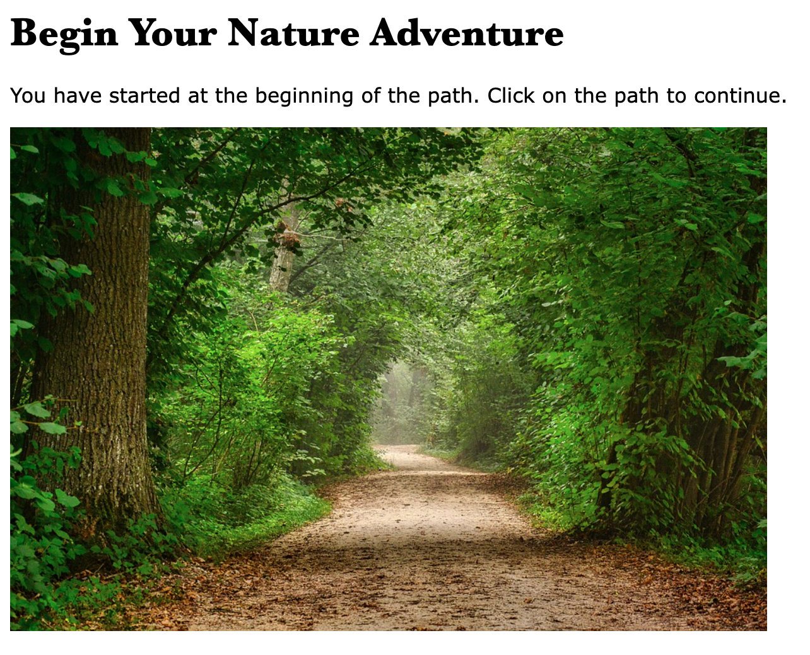

See my recent projects from my Digital Media Art class. Use the links below or click each image to see more from that project.
Glitch Art Meme Mashup Minecraft Sculpture 3D Print Net.art

 

My name is Olivia Joy Cacdac and I am a Computer Science major at San Jose State University. I am also a beginner New Media Artist. Through my Intro to Digital Media Art class, I've had the opportunity to explore and create New Media Art using various tools, such as Adobe Photoshop and 3D printing softwares.